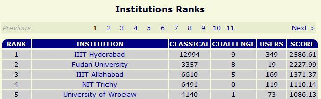
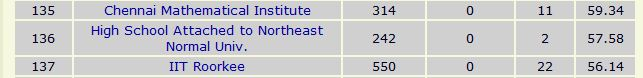
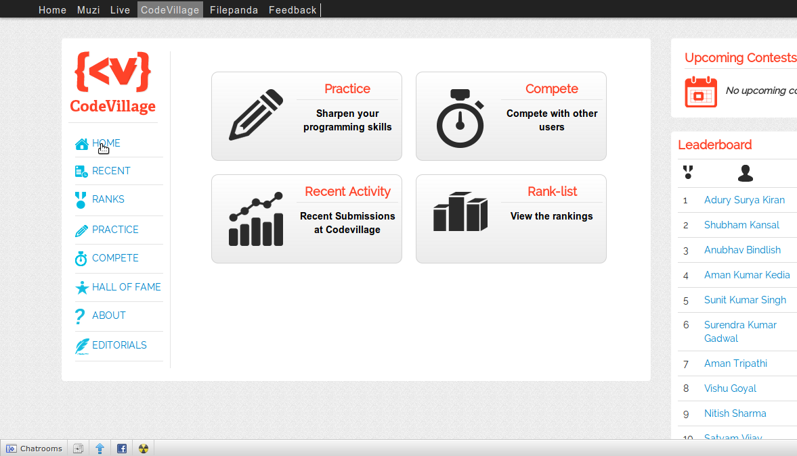
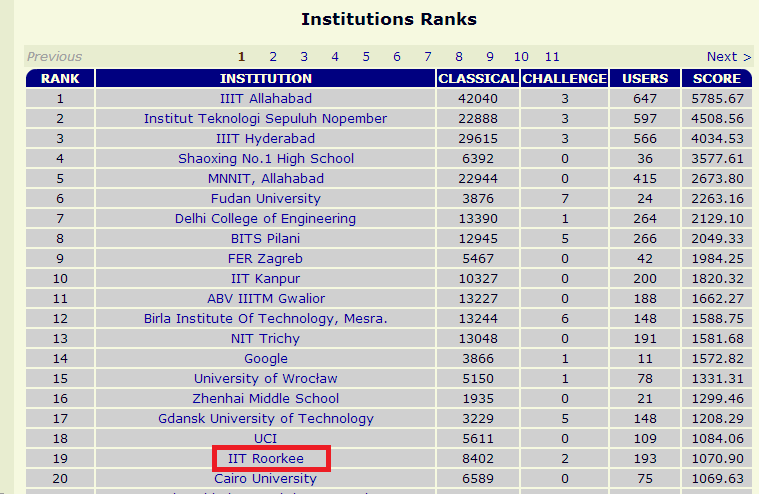

PAG
Programming and Algorithms Group

Programming: Myths and Misconceptions
- You need to be an expert in C++ / Java.
- Programming has got to do with learning a lot of different programming languages.
- Programming is developing a lot of fancy application programs.
- Its only a cup of tea of a few selected people.
Dude! Well if that’s not programming then what is it?
Well, here it goes…
Defining Programming
- Programming is the art of telling dumb machines what to do and how to do it.
- It helps one develop an analytical ability to solve complex problems
- Creates a breed of smart computer scientists who will help carry on the Information Revolution
Programming and Algorithms are not same!!
Difference between Programming and Algorithm
- Algorithm is a formal method of analysis of a problem involving a logical sequence of thinking.
- Programming has got to do with using these algorithms to realize the solution to the problem.
Umm… but how about exposure to programming in our curriculum, itself?
Won’t we will be learning all these, after all??
Well, all that is there! But…
- Time constraints do not allow courses in the curriculum to be comprehensive enough.
- Courses fail to cultivate enough motivation.
- The proffs, as we all understand, usually make the class so interesting that it becomes difficult NOT to concentrate.*
*Might contain sarcasm. Ssshhh.
But what about other colleges? They must be having the same problems. So, what’s the big deal??
Nah! in fact the situation is a little scary if we look at the statistics.
Comparison with other IITs and IIITs
- IIIT Hyderabad is one of the few colleges in India with a well-established culture of programming.
- Most of our sister IITs- Delhi, Kanpur, Bombay already host a lot many intra-campus programming activities.
- However, IITR has shown tremendous growth and potential in the last 2-3 years.
IIIT Hyderabad sees a lot of commendable efforts made by the faculty and the administration to improve the coding prowess of its students.
- Official internal judge for assignment submission. Collaboration with MIT.
- Students are taught advanced programming concepts in the first year itself.
SPOJ Ranking 2010
 So what do we do?
Come on, don’t say we want to organize classroom lectures for you … pooh!
No, not at all!! After all we know what lectures are like!!!
Introducing
Programming and Algorithms Group
Programming and Algorithms Group is the first initiative ever in the Campus to bring together coders from all sections/years of students so that a healthy environment is created through mutual exchange of knowledge.
Operating under the aegis of SDS, PAG is a student run group to promote an active coding culture in the campus.
Objectives
- Form the best team of IIT Roorkee.
- Create a programming culture within the campus by organizing regular programming contests.
- Encourage as many students to participate in various national and international programming contests.
Programming Contests
- Regular contests are organized and the campus winners get featured in the CodeVillage Hall Of Fame.
- Besides that, we have various programming contests every year which see international participation.
- Continuous ranking update on the best programmers of the campus.
- Goodies/Prizes to be won in every contest.
Contests
- Insomnia
- Codematics
- Codeblitz
- Logicode
- MathGenii
Codevillage
Tutorials
- Posting of practice problems on the intranet.
- Active discussion forum
- 'Problem of the week' initiative
- Important links which help in improving your skill.
Benefits in Placement and Internship
- Microsoft, Redmond
- Goldman Sachs
- Adobe
- IBM
- University of Minnesota
Achievements
ACM ICPC World Finals
Last year, for the first time a team from IIT Roorkee qualified for the ACM ICPC world finals.
Stood first among all Indian teams.
ACM ICPC Regionals

Roorkee no longer Rookie!
We do not intend to boast, but IIT Roorkee has shown tremendous improvement over the past few years.
As compared to other IITs, Roorkee sees a huge student participation in various online coding competitions.
Current SPOJ ranking
So interested ??
Bloody Hell! Now you ask that!
What for have I been sitting and listening you??
Yeah, okay then !!
Contact us
Facebook page
fb.com/sdspag
Facebook group
facebook.com/groups/sdspag
Blog
pag.sdslabs.co/blog